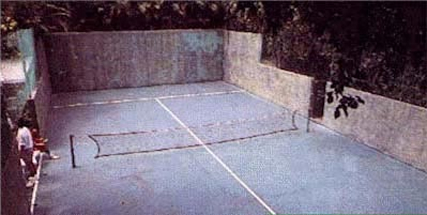

Acerca de nuestra Historia!
Nuestra historia!
En 1994, en un pequeño municipio de la provincia de Madrid, un grupo de amigos con un sueño en común decidió crear algo más que un club deportivo: el Club de Pádel Padelfrán. En ese entonces, el pádel aún no era tan popular como el tenis o el fútbol, pero sus fundadores, un grupo de jóvenes entusiastas del deporte, intuyeron que algo grande estaba por venir. Fran González, un joven empresario con raíces en el mundo del deporte, fue el principal impulsor del proyecto. Había jugado al tenis toda su vida, pero tras asistir a un torneo de pádel en Barcelona, quedó fascinado por la velocidad del juego, la interacción con las paredes y la atmósfera social que envolvía a los jugadores. Decidió entonces que iba a crear un club en su ciudad natal, un lugar donde no solo se practicara un deporte, sino que también se creara una comunidad
Como estamos hoy.

Hoy en día, Padelfrán es mucho más que un club de pádel: es una institución con más de 2.000 socios y una reputación internacional en el mundo del deporte. Sus instalaciones cuentan con 12 pistas de pádel, un centro de alto rendimiento, un gimnasio de última generación, una piscina y un restaurante de calidad, lo que lo convierte en un lugar de encuentro para jugadores profesionales, amateurs y familias. El Club de Pádel Padelfrán ha mantenido su esencia desde sus humildes comienzos: un espacio donde se fomenta la camaradería, el trabajo en equipo y la pasión por el pádel. Para los fundadores, especialmente para Fran González, lo más importante sigue siendo la comunidad. Aunque ahora el club tiene una proyección internacional, nunca se olvida de sus raíces y de la filosofía que permitió que Padelfrán naciera: "Un club para todos, con el deporte como excusa para crear amistades, recuerdos y nuevas historias".
Contactate con nosotros mediante nuestras redes.